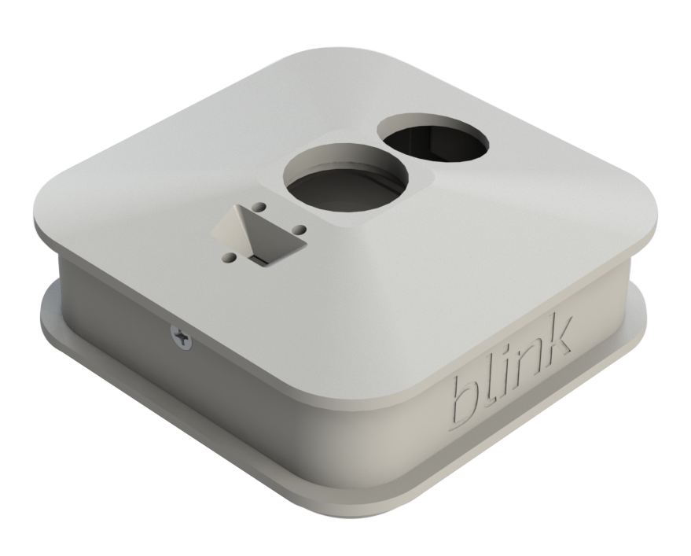

This website is currently under active development. Please reach feel free to contact me at alex@palo.design for any inquiries about me or my work. Thank you for your patience.
In 2014 Immedia Semiconductor successfully ran a Kickstarter campaign for their proprietary low-powered smart security cameras which raised over $1 million. I was contracted as a product design consultant to assist with the design and prototyping of their alpha units for Kickstarter fulfillment. I continued to support future revisions to their productions models.
In late 2017 the popularity and commercialization of their cameras led to a $90 million acquisition of the company by Amazon.
During a series of observations at Boston Medical Center teams were tasked with identifying a procedure or device that caused inefficiencies or prone to failure during surgeries. Our team decided to focus on improving the efficiency of the frenotomy procedure for neonates that are tongue-tied. The current standard uses a tongue elevator, hemostat, and surgical scissors to incise the frenulum, which requires an experienced practitioner to perform due to the sensitive anatomy of a neonate. Our goal was to create a device that combines the traditional tools for this procedure, is low risk to the infants, and requires minimal training for the operator.
Partnered with two friends, I was charged with designing and prototyping a bike mountable phone case with a built-in light reflector to amplify a phone’s flash LED. The goal of this project was to create a phone case that could replace standard bike lights.